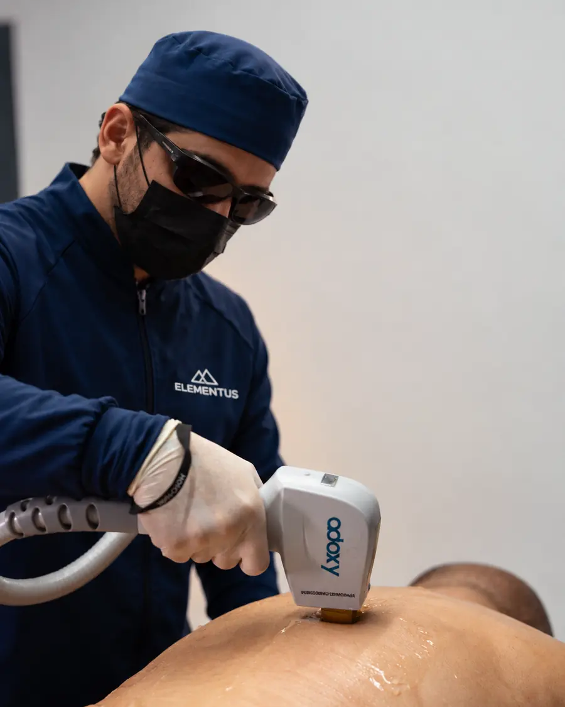
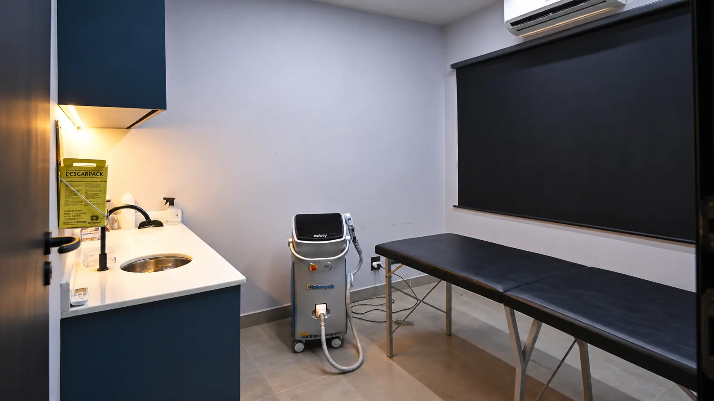
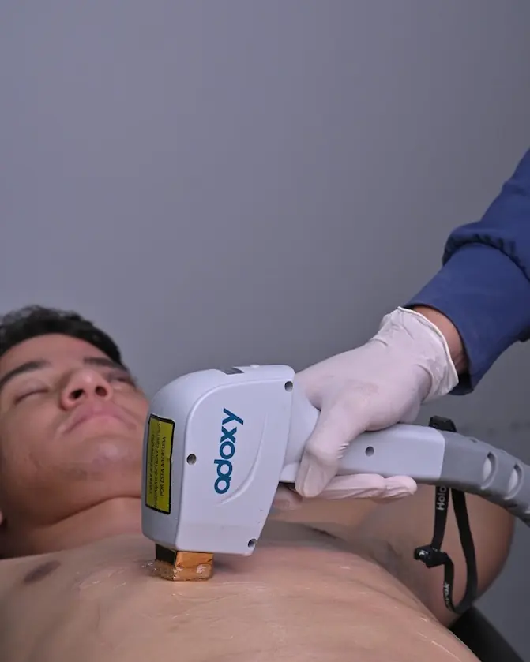
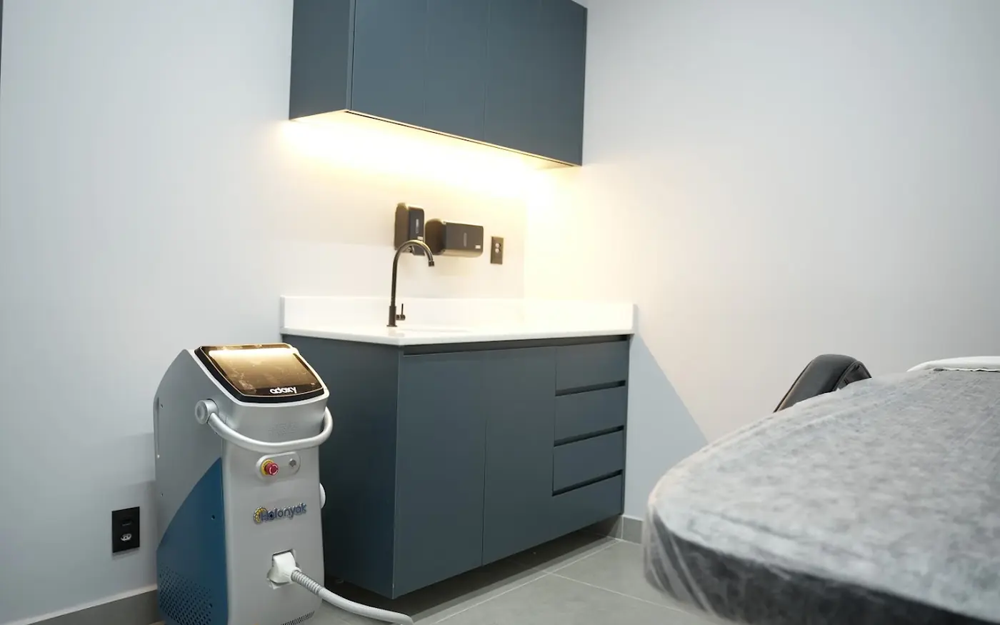
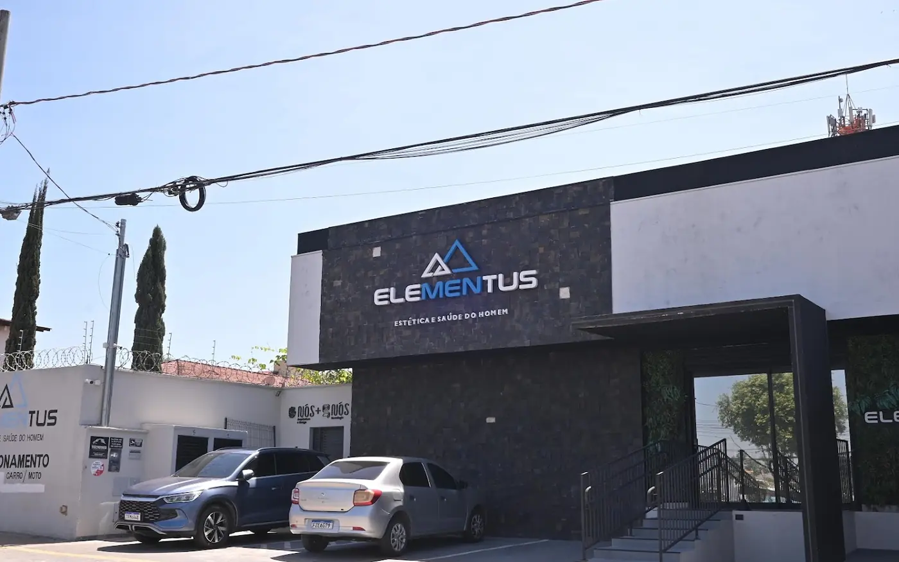

“Fiz uma sessão de depilação a LED na Elementus e fiquei muito satisfeito! Resolvi algo que atrapalhava muito minha autoestima, sem dor.”
Clínica de depilação masculina · Jardim Goiás
Depilação Masculina em Goiânia com LED
Chega de lâmina, foliculite e pelo encravado. Na Elementus, a depilação LED masculina é feita em um ambiente feito para homens, por profissionais homens, com tecnologia indicada para todos os tons de pele.
- Avaliação gratuita
- Todos os tons de pele
- Estacionamento gratuito
- Profissionais homens

5,0★★★★★168 avaliações no GoogleEm 1 minuto
Por que os homens escolhem a Elementus
Conheça a clínica, o equipamento e como funciona a sua sessão.

1:16Para todos os tons de pele
8 motivos para fazer sua depilação na Elementus
Segundo o fabricante, o Holonyak permite atender do fototipo I ao VI, inclusive pele morena e negra, com parâmetros ajustados na avaliação.
01
Ambiente pensado para o homem
Uma clínica criada para o público masculino, do atendimento à decoração. Você fica à vontade do começo ao fim.
02
Menos foliculite e pelos encravados
Ao reduzir os pelos, o tratamento ajuda a diminuir a foliculite e os pelos encravados que a lâmina provoca.
03
Todos os tons de pele
O Holonyak, registrado na Anvisa, permite atender do fototipo I ao VI, inclusive pele negra, com parâmetros ajustados.
04
Sessões rápidas
Modos de disparo pontual e de varredura agilizam as sessões, inclusive em áreas grandes como costas e pernas.
05
Sem filas, agenda fácil
Horário marcado e atendimento pontual. É só chamar no WhatsApp e escolher o melhor dia.
06
Redução progressiva dos pelos
Muitos pacientes já notam diferença nas primeiras sessões. O plano é definido na sua avaliação gratuita.
07
Estacionamento gratuito
Vagas na porta da clínica e estacionamento conveniado ao lado, no Jardim Goiás.
08
Profissionais homens
Atendimento por profissionais do sexo masculino, com discrição e conforto, inclusive na região íntima.
Problemas que a depilação LED resolve
Foliculite, pelo encravado e irritação na barba
Foliculite na barba
As bolinhas inflamadas que aparecem depois de barbear diminuem quando há menos pelos e fios mais finos.
Barba e pelo encravado
O pelo que cresce para dentro da pele é um dos maiores motivos para quem procura a depilação LED.
Barba inflamada e irritação
Menos lâmina significa menos atrito, vermelhidão e ardência no rosto e no pescoço.
Manchas no pescoço por lâmina
A irritação repetida pode deixar a pele marcada. Reduzir o barbear ajuda a pele a se recuperar.
Áreas atendidas
Da barba ao corpo inteiro
Você escolhe as regiões que mais incomodam e montamos um plano sob medida na avaliação gratuita.
Barba e rosto
Depilação da barba, faixa de barba e desenho da barba com LED.
- Barba e pescoço
- Faixa de barba
- Cavanhaque
- Nariz
- Orelha
Pescoço e nuca
Para quem sofre com foliculite e pelo encravado no pescoço.
- Pescoço
- Nuca
Peito e abdômen
Depilação do peito e do abdômen masculino.
- Tórax
- Abdômen
Costas e ombros
Áreas grandes, atendidas com o modo de varredura.
- Costas e ombro
- Ombro
Axilas, braços e mãos
Menos odor e mais praticidade no dia a dia.
- Axilas
- Braços
- Mãos e dedos
Glúteos e pernas
Depilação dos glúteos e das pernas masculinas.
- Glúteos
- Coxa
- Meia perna
- Pernas inteiras
Região íntima
Depilação íntima masculina com privacidade, por profissionais homens.
- Virilha simples
- Virilha e perianal
Corpo inteiro
Um plano que reúne todas as regiões.
- Corpo todo

Como funciona
Holonyak: LED de alta potência
A luz do LED é absorvida pelo pigmento do pelo e conduzida até o folículo, reduzindo sua capacidade de produzir novos fios. Como os pelos crescem em ciclos, o tratamento é feito em sessões espaçadas.
A Elementus utiliza o Holonyak, fabricado pela Adoxy e registrado na Anvisa sob o nº 82149139002.
- Energia homogênea: diodos de LED de alta potência.
- Resfriamento da ponteira para uma sessão mais confortável.
- Disparo pontual e varredura, que agilizam áreas grandes como costas e pernas.
LED ou laser?
Depilação a LED x depilação a laser
Muita gente procura "depilação a laser masculina". Veja a diferença para escolher com segurança.
Depilação a LED
- Luz de diodos de LED de alta potência.
- Energia distribuída de forma homogênea.
- Sessões rápidas, com desconforto mínimo.
- Indicada para todos os fototipos, com ajuste de parâmetros.
Depilação a laser
- Feixe de luz concentrado em um comprimento de onda.
- Também atua no pigmento do pelo.
- A sensação varia conforme o equipamento e a região.
- Também depende de avaliação do tipo de pele.
Nas duas tecnologias, o que mais pesa no resultado é a avaliação e o ajuste correto para a sua pele e o seu pelo.
Privacidade
Depilação íntima masculina com discrição
A depilação da região íntima é feita por profissionais homens, em sala privativa, com horário marcado e protocolos de higiene. Atendemos virilha simples ou completa, região perianal e região íntima completa.
Todas as dúvidas podem ser tiradas com discrição pelo WhatsApp antes da avaliação.

Quantas sessões
Do primeiro contato à pele livre da lâmina
O número de sessões depende da região, da cor e da espessura dos pelos e de fatores hormonais, e é definido na avaliação gratuita.
PASSO 1
Chame no WhatsApp
Tire suas dúvidas e marque a avaliação no melhor horário.
PASSO 2
Avaliação gratuita
Analisamos sua pele, seus pelos e as regiões que você quer tratar.
PASSO 3
Plano sob medida
Você recebe a indicação de sessões e o intervalo entre elas.
PASSO 4
Sessões e manutenção
Sessões rápidas, com orientação de cuidados antes e depois.
Dúvidas frequentes
Perguntas sobre depilação masculina
Dor e conforto
Depilação a LED dói?
A maioria dos pacientes descreve um calor leve, com desconforto mínimo. A ponteira do Holonyak tem resfriamento e os parâmetros são ajustados para o seu conforto.
Qual a diferença entre depilação a LED e depilação a laser?
As duas usam luz para atingir o folículo do pelo. O LED de alta potência distribui a energia de forma homogênea e costuma ser mais confortável. O que mais pesa no resultado é a avaliação e o ajuste correto para o seu tipo de pele e de pelo.
Depilação a LED puxa o pelo como a cera?
Não. A luz age no folículo e o pelo cai aos poucos nos dias seguintes, sem puxões.
Foliculite e barba
Depilação a LED resolve foliculite e pelo encravado na barba?
Ao reduzir a quantidade e a espessura dos fios, a depilação LED ajuda a diminuir bastante a foliculite e os pelos encravados. Casos com inflamação ativa são avaliados antes de começar.
Dá para fazer só a faixa da barba e o pescoço, sem tirar a barba toda?
Sim. É possível tratar só a faixa de barba, o pescoço ou desenhar o contorno, mantendo a barba.
Se eu fizer depilação na barba, o pelo nunca mais volta? E se eu quiser ter barba de novo?
A redução é duradoura e progressiva, por isso é importante decidir bem quais áreas tratar. Na avaliação, o profissional ajuda a definir o desenho para você não se arrepender.
Segurança
Depilação a LED funciona em pele morena e negra? Pode manchar?
Sim. Segundo o fabricante, o Holonyak atende do fototipo I ao VI, inclusive pele negra. Os parâmetros são ajustados ao seu fototipo para mais segurança.
Funciona em pelos loiros, ruivos ou brancos?
A resposta é limitada, porque a tecnologia depende do pigmento do pelo. Isso é avaliado na consulta.
Posso fazer depilação a LED em cima de tatuagem?
Não se aplica a luz diretamente sobre a tatuagem. O profissional protege ou contorna a área.
Região íntima
Pode fazer depilação íntima masculina a LED? É seguro?
Sim. A depilação íntima masculina é feita com parâmetros específicos para a região, por profissionais treinados, com higiene e conforto.
Vocês fazem depilação da virilha, perianal, bolsa escrotal e região peniana?
Sim. A Elementus atende a virilha (simples ou completa), a região perianal, a bolsa escrotal e a região peniana. As áreas e o plano são definidos na avaliação, com toda a discrição.
Como funciona a privacidade na depilação íntima? Quem faz a aplicação?
A aplicação é feita por profissionais homens, em sala privativa e com agendamento, para você ter conforto e discrição do início ao fim.
Sessões e resultado
Quantas sessões são necessárias para costas e peito?
Depende da cor e da espessura dos pelos e de fatores hormonais. A quantidade é indicada na avaliação; regiões com pelo grosso costumam responder bem.
A depilação a LED é definitiva? Precisa de manutenção?
O tratamento busca uma redução duradoura dos pelos, que varia de pessoa para pessoa. Pode haver pelos residuais e sessões de manutenção.
Pelo grosso das costas sai com LED?
Pelos grossos e escuros costumam ter boa resposta à tecnologia, porque têm mais pigmento.
Quanto tempo dura a sessão? Dá para fazer corpo inteiro no mesmo dia?
As sessões são rápidas, e áreas grandes são feitas com o modo de varredura. O tempo do corpo inteiro é informado na avaliação.
Antes e depois da sessão
Preciso raspar antes da sessão?
Sim, a área deve ser raspada conforme a orientação recebida. Não use cera, pinça ou linha nas semanas anteriores.
A pele fica vermelha ou irritada depois?
Pode ficar levemente avermelhada por algumas horas. Use protetor solar e mantenha a pele hidratada.
Posso treinar, ir à piscina ou pegar sol depois da sessão?
Evite sol, piscina, sauna e treino intenso nas primeiras 24 a 48 horas. As orientações completas são passadas no dia.
Posso usar desodorante logo depois de depilar a axila?
O ideal é esperar algumas horas e preferir produtos sem álcool nas primeiras 24 horas.
Valor
Quanto custa a depilação masculina a LED em Goiânia?
O valor depende das áreas escolhidas e do plano de sessões. A avaliação é gratuita e sem compromisso: chame a equipe no WhatsApp para agendar.
Avaliações no Google · 5,0 ★★★★★
Quem fez, recomenda
“Fui super bem atendido desde o primeiro momento. Todo mundo extremamente atencioso e as sessões de LED foram tranquilas e indolores. Recomendo.”
“Meu esposo ficou extremamente encantado com o profissionalismo, cuidado e atenção! Explicaram todo o processo, mesmo ele já tendo feito em outra clínica. Super recomendo! Homens, vão sem medo.”
Localização
No Jardim Goiás, com estacionamento gratuito
Rua 32, Qd. A22, Lt. 20, nº 1149 – Jardim Goiás, Goiânia – GO, 74805-350Segunda a sexta, das 9h às 18h, e sábado, das 9h às 12h. Fechado aos domingos e feriados.

Avaliação gratuita
Pronto para largar a lâmina?
Fale agora com a equipe da Elementus, tire suas dúvidas e marque sua avaliação gratuita. Atendimento de segunda a sexta, das 9h às 18h, e sábado, das 9h às 12h.
Conheça todos os tratamentos da Clínica Elementus – estética masculina em Goiânia